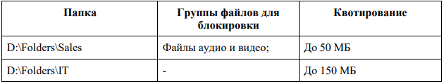

Модуль 1. Конфигурация сетевого телекоммуникационного оборудования
1. Произведите подключения сетевого оборудования согласно Схеме 1.
2. Для настройки устройств используйте следующие параметры сетей (где N – номер
участника):
a. Сеть Head офиса LAN1: 192.168.N.128/26
b. Сеть Офиса Branch1 LAN2: 192.168.N.0/27
c. Сеть Офиса Branch2 Lan3: 192.168.N.216/29
d. Сеть ISP: 10.0.N.248/30
e. Сеть управления MNG: 176.18.N.32/28.
3. Настройте сетевые адаптеры ПК SERVER согласно Схеме 1.
4. Известно, что маршрутизатор R1 переехал из старого офиса компании и его IPадрес 10.0.5.254, а логин/пароль консольного подключения cisco. Согласно правилам
определения имен устройств в компании, назовите маршрутизатор CO-Router.
5. Установите пароли с функцией требования их ввода (при необходимости):
- на привилегированный режим adminin
- на первые 3 (три) терминальные линии: SICiCO
- на консольное подключение: letmeincon.
Не забудьте включить шифрование паролей на устройствах с помощью
специального сервиса.
6. Роутер R2 был куплен специально для подключения нового офиса. Его
конфигурация не тронута и находится в состоянии по умолчанию. Назовите маршрутизатор
ABC-Router. Установите такие же пароли доступа, как и на роутере CO-Router.
7. Известно, что коммутаторы SW1 и SW2 также переехали из старого офиса
компании, но их конфигурации сброшены. Назовите их CO-SW1 и CO-SW2
соответственно. Установите такие же пароли доступа, как и на роутере.
8. Для централизованного конфигурирования VLAN в коммутируемой сети
предприятия используйте протокол VTP версии 3, в качестве основного сервера VTP
настройте CO-SW1, в качестве домена используйте VTPFin.ru. Используйте пароль
VTPPass для защиты VTP. Таблица VLAN должна содержать следующие сети:
- сеть локальной сети LAN1 – VLAN 11, с именем LAN1
- сеть управления MNG – VLAN 77, с именем MANAGEMENT
- сеть неиспользуемых портов – VLAN 99, с именем DEPO
9. Настройте IP-адреса коммутаторов CO-SW1 и CO-SW2 соответственно Схеме 1.
Используйте VLAN 77 в качестве сети управления сетевым оборудованием; в качестве
нетэгируемой VLAN используйте VLAN 11. Все неиспользуемые интерфейсы отключите
и переведите в VLAN 99.
10. Включите протокол безопасности port security на интерфейсе fa0/11, назначьте
порт коммутатора в VLAN 11, максимальное количество MAC адресов на порту должно
быть равно 60, MAC адреса должны оставаться в настройках после перезагрузки, способ
отработки нарушения безопасности – блокировка без уведомления.
11. На коммутаторах и роутерах на всех виртуальных линиях используется протокол
SSHv2 с 1024 RSA ключом, доступ по telnet отключен для предотвращения утечки
информации, для авторизации используется локальная база данных пользователей.
Пользователь для авторизации через SSH на устройства cisco / SanFranCisco. Он должен
обладать максимальными привилегиями, все коммутаторы и маршрутизаторы должны
быть в домене fincorp.ru.
12. Между коммутаторами необходимо обеспечить отказоустойчивость с помощью
проприетарного протокола компании Cisco, организовать агрегацию между портами f0/7-8
на коммутаторах SW1-SW2 с номером агрегированного интерфейса 3.
13. Настройте интерфейсы маршрутизаторов согласно Схеме 1. На интерфейсе G0/1
роутера CO-Router реализуется технология RoS (роутер-на-палочке). Используйте
подынтерфейсы g0/1.11 и g0/1.77 для сетей Lan1 и MNG соответственно.
14. Используя списки контроля доступа (ACL) обеспечьте, чтобы удаленное
подключение к маршрутизатору было возможно только с компьютера участника, но при
этом никак не ограничивало трафик через маршрутизатор.
15. Настройте динамическую маршрутизацию на CO-Router и ABC-Router
с использованием протокола OSPFv2 согласно Схеме 1, объявите сети с использованием
md5 ключа cisco321 для передачи OSPF-пакетов. Маршрутизаторы должены получать
информацию о всех сетях.
16. На обоих маршрутизаторах отключите протокол CDP только на портах в сторону
сети ISP.
17. На всех сетевых устройствах должны быть настроены: вывод консольных
сообщений в синхронном режиме, чтобы выводимые сообщения не разрывали ввод команд
в консоли, баннер «Сообщение дня» (message-of-the-day) следующего содержания:
«Authorized access only!».
18. В сетевой инфраструктуре сервером синхронизации времени является CO-Router.
Все остальные сетевые устройства должны использовать его в качестве сервера времени.
Настройте временную зону с названием MSK, укажите разницу с UTC +5 часов.
Используйте стратум 2. Используйте для синхронизации клиентов аутентификацию MD5 с
ключом timestamp.
19. На CO-Router настройте протокол динамической конфигурации хостов для сети
LAN2. Устройства должны получать корректные ip/netmask и gateway. Компьютер
BRANCH1-CENTOS должен получать адрес 192.168.N.13.
20. Для тестового запуска протокола IPv6 необходимо настроить следующее:
- включить поддержку IPv6 маршрутизации на двух маршрутизаторх по протоколу
OSPFv3
- настроить IPv6 адреса на LoopBack 0 интерфейсе CO-Router 2001:765:916:C0::1/64
- настроить IPv6 адреса на LoopBack 0 интерфейсе ABC-Router 2001:765:916:ABC:1/64.
21. С ПК Server должен обеспечиваться доступ ко всем сетевым устройствам.
Модуль 2. Конфигурация сервисов и служб на базе ОС Microsoft Windows Server
2019
1. Настройте параметры BIOS компьютера для работы с ПО виртуализации.
2. Установите ПО Vmware Workstation.
3. Создайте ВМ со след. параметрами:
имя ВМ – HEAD-DC.
виртуальный диск в виде одного файла объемом 40 гб
объем ОП 4 гб 4 ядра процессора виртуальный Intel VT-x/EPT или AMD-V/RVI
тип подключения сетевого адаптера – VMnet0 (автомост).
4. Установите ОС Windows Server 2019; пароль учетной записи Administrator:
Ab!@dmin.
5. Задайте имя серверу - HEAD-DC, настройте сетевые параметры согласно
Схеме.
6. Сделайте сервер контроллером домена - AbiMoscow.com.
Создайте организационные единицы, группы и пользователей в домене
AbiMoscow.com согласно таблице:
Таблица 2. - Таблица настройки групп пользователей
7. Установите и настройте службы DNS и DHCP для сети LAN1. Служба DHCP
должна иметь пул из 7 (семи) адресов, начиная с 16-го доступного адреса из сети LAN1,
исключая 4 и 5 адрес, 3-ий адрес диапазона DHCP должен быть зарезервирован для машины
HEAD-RDS. В опциях должно передаваться только шлюз и DNS сервер.
8. Настройте зону прямого и обратного просмотра DNS, а также добавьте
необходимые записи (A) для серверов. Сконфигурируйте пересылку на адреса: 1.1.1.1
и 8.8.8.8.
9. Создайте ВМ со след. параметрами: имя ВМ – HEAD-RDS виртуальный диск
в виде одного файла объемом 40 гб объем ОП 4 гб 4 ядра процессора виртуальный Intel
VT-x/EPT или AMD-V/RVI тип подключения сетевого адаптера – сетевой мост
10. Установите ОС Windows Server 2019 пароль учетной записи Administrator:
Ab!@dmin.
11. Задайте имя серверу - HEAD-RDS, ОС должна получать зарезервированный
IP-адрес от MAIN-DC согласно Схеме 1.
12. Введите сервер в домен AbiMoscow.ru. В структуре домена переместите его
в подразделение HEAD.
13. На сервере HEAD-RDS сконфигурируйте:
- терминальный сервер с лицензированием по компьютерам (используйте
временную лицензию)
- веб доступ RemoteApp к службам терминалов сервера
- публикацию программы «WordPad» на веб-портале RemoteApp для всех
сотрудников отдела BO_IT.
14. Обеспечьте отказоустойчивое хранилище на сервере HEAD-DC создав
зеркальный рейд, добавив два диска по 2GB. Назначьте ему букву D.
15. На сервере HEAD-DC создайте сетевые папки, настройте фильтры
блокировки файлов (запретить хранение файлов аудио и видео) в соответствии с таблицей:

Таблица 1. - Таблица настройки фильтров.
16. Настройте и примените групповые политики к пользователям и клиентским
рабочим станциям домена.
17. Создайте политику учетных записей для всех пользователей домена
AbiMoscow.com:
- вести журнал паролей - 7
- максимальный срок действия пароля - 60
- пароль должен отвечать требованиям сложности - выключено
- минимальная длина пароля – 8
- продолжительность блокировки учетной записи - 5
- пороговое значение блокировки - 3
- время до сброса счетчика блокировки - 2.
18. Добавьте пользователей отдела BRANCH1/BO_IT в локальную группу
администраторов для всех компьютеров (ноутбуков) домена AbiMoscow.com.
19. Подключите сетевые диски сотрудникам отделов Sales и IT, назначьте букву G.
20. Включите удаленный рабочий стол на всех компьютерах, находящихся
в филиале (Branch1).
Модуль 3. Конфигурация сервисов и служб на базе дистрибутивов Linux -
Debian 10 и CentOS 8
8. Установите ПО Oracle VirtualBox.
9. Создайте ВМ со след. параметрами:
имя – BRANCH1-DEBIAN
объем ОП – 1 гб
динамичный виртуальный жесткий диск VDI объемом 10 гб
включен PAE/NX
тип подключения сетевого адаптера – сетевой мост.
10. Установите на виртуальную машину ОС Debian10 (пароль
суперпользователя: toor! полное имя пользователя: user1 пароль для пользователя user1:
toortoor!).
11. Задайте имя компьютера: BRANCH1-DEBIAN.
12. Измените DNS-суффикс для данной машины на russia.ru.
13. Установите пароль на суперпользователя root: toortoor.
14. Настройте сетевой интерфейс согласно Схеме 1.
15. Добавьте для текущего сетевого интерфейса alias с IP согласно Схеме 1.
16. Создайте пользователей user-1N, user-2N, user-3N (где N – номер участника)
пароли соответственно: R!123456 R!234567 R!345678.
17. Создайте группу ablmpx и добавьте в нее пользователя user-2N (где N – номер
участника).
18. Пропишите в список репозиториев для скачивания свободно
распространяемого ПО сервер http://mirror.abimoscow.ru/deb/ с наибольшим приоритетом,
псевдонимом релиза wheezy и компонентом main. Пропишите запись как на бинарные
пакеты, так и на пакеты с исходным кодом.
19. Установите web-сервер Apache. Замените стартовую страницу (стартовая
страница должна содержать ТОЛЬКО сообщение «Abilympics Russia»).
20. Загрузите в виртуальную среду готовый образ ОС CentOS 8. Для входа
в систему используйте логин/пароль root/toortoor.
21. Задайте имя компьютера: BRANCH1-CENTOS.
22. Установите пароль на суперпользователя root: toormoscow.
23. Настройте сетевой интерфейс согласно Схеме.
24. Измените DNS-суффикс для данной машины на russia.ru.
25. Разрешите удаленное подключение по протоколу SSH для суперпользователя
root.